library(tidyverse)시각화: EDA
시각화(visualization)와 변환(transformation)을 사용하여 체계적인 방식으로 데이터를 탐색하는 방법을 보여줄 것입니다. 통계학자들은 이 작업을 탐색적 데이터 분석(exploratory data analysis) 또는 줄여서 EDA라고 부릅니다.
EDA는 반복적인 주기(iterative cycle)입니다.
- 데이터에 대한 질문을 생성합니다.
- 데이터를 시각화, 변환, 모델링하여 답변을 검색합니다.
- 배운 것을 사용하여 질문을 다듬고(refine) 새로운 질문을 생성합니다.
EDA는 엄격한 규칙 세트가 있는 형식적인 프로세스가 아닙니다. 무엇보다도 EDA는 마음가짐(state of mind)입니다. EDA의 초기 단계에서는 떠오르는 모든 아이디어를 자유롭게 조사해야 합니다. 이러한 아이디어 중 일부는 성공할 것이고 일부는 막다른 골목(dead ends)이 될 것입니다. 탐색을 계속하면서 여러분은 궁극적으로 문서화하고 다른 사람들과 소통할 수 있는 생산적인 통찰력(productive insights) 몇 가지로 범위를 좁히게(home in on) 될 것입니다.
EDA는 주요 연구 질문(primary research questions)이 쟁반에 담겨 제공되는(handed to you on a platter) 경우에도 분석에 항상 데이터의 품질을 조사해야 하기 때문에 모든 데이터 분석의 중요한 부분입니다. 데이터 정리(Data cleaning)는 EDA의 한 가지 적용일 뿐입니다. 데이터가 기대치를 충족하는지 여부에 대해 질문합니다. 데이터 정리를 수행하려면 시각화, 변환, 모델링과 같은 EDA의 모든 도구를 배포(deploy)해야 합니다.
1 질문
“일상적인 통계적 질문(routine statistical questions)은 없다. 의심스러운 통계적 일상(questionable statistical routines)만 있을 뿐이다.” - 데이비드 콕스 경(Sir David Cox)
“항상 정밀해질 수 있는 잘못된 질문에 대한 정확한 답보다는, 종종 모호하더라도 올바른 질문에 대한 근사적인 답이 훨씬 낫다.” - 존 튜키(John Tukey)
EDA 중 목표는 데이터에 대한 이해를 발전시키는 것입니다. 이를 수행하는 쉬운 방법은 조사를 안내하는 도구로 질문을 사용하는 것입니다. 질문을 할 때 그 질문은 데이터셋의 특정 부분에 집중하게 하고 어떤 그래프, 모델 또는 변환을 만들지 결정하는 데 도움을 줍니다.
EDA는 기본적으로 창조적인 프로세스(creative process)입니다. 대부분의 창조적인 프로세스와 마찬가지로 양질의(quality) 질문을 하는 열쇠는 많은 양의(quantity) 질문을 생성하는 것입니다. 분석 시작 시점에는 데이터셋에서 어떤 통찰력을 얻을 수 있을지 모르기 때문에 핵심을 찌르는(revealing) 질문을 하기가 어렵습니다. 반면에 새로운 질문을 할 때마다 데이터의 새로운 측면을 노출시키고 발견을 할 가능성을 높일 수 있습니다. 여러분이 발견한 것에 기반한 새로운 질문으로 각 질문에 대한 후속 조치(follow up)를 취한다면, 흥미로운 데이터 부분으로 빠르게 파고들어(drill down) 생각할 거리를 던져주는(thought-provoking) 질문 모음을 개발할 수 있습니다.
연구를 안내하기 위해 어떤 질문을 해야 하는지에 대한 규칙은 없습니다. 그러나 두 가지 유형의 질문은 데이터 내에서 발견을 하는 데 항상 유용합니다. 이 질문들을 대략적으로 다음과 같이 표현할 수 있습니다.
- 내 변수 내에서 어떤 유형의 변동(variation)이 발생합니까?
- 내 변수들 사이에서 어떤 유형의 공변동(covariation)이 발생합니까?
이 장의 나머지 부분에서는 이 두 가지 질문을 살펴볼 것입니다. 변동과 공변동이 무엇인지 설명하고 각 질문에 답하는 여러 가지 방법을 보여드리겠습니다.
2 변동
변동(Variation)은 측정에서 측정으로(measurement to measurement) 변수의 값이 변하는 경향입니다. 실생활에서 변동을 쉽게 볼 수 있습니다. 연속형(continuous) 변수를 두 번 측정하면 두 가지 다른 결과를 얻게 됩니다. 이것은 빛의 속도와 같이 일정한 수치(quantities)를 측정하더라도 마찬가지입니다.
각 측정에는 측정할 때마다 달라지는 적은 양의 오차(error)가 포함됩니다. 다른 대상(다른 사람들의 눈 색깔)을 측정하거나 다른 시간(다른 순간의 전자 에너지 수준)에 측정하는 경우에도 변수는 변동할 수 있습니다. 모든 변수는 고유한 변동 패턴을 가지고 있으며, 이는 동일한 관측치에 대한 측정 간에 그리고 관측치 전체에 걸쳐 변수가 어떻게 달라지는지에 대한 흥미로운 정보를 밝혀낼 수 있습니다. 이 패턴을 이해하는 좋은 방법은 변수 값의 분포(distribution)를 시각화하는 것입니다.
diamonds 데이터셋에 있는 약 54,000개의 다이아몬드의 무게(carat) 분포를 시각화하는 것으로 탐색을 시작하겠습니다. carat은 숫자형(numerical) 변수이므로 히스토그램을 사용할 수 있습니다.
ggplot(diamonds, aes(x = carat)) +
geom_histogram(binwidth = 0.5)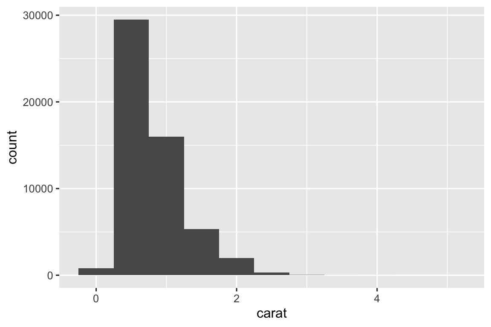
이제 변동을 시각화할 수 있게 되었습니다. 플롯에서 무엇을 찾아야 할까요? 그리고 어떤 유형의 후속 질문을 해야 할까요? 그래프에서 찾을 수 있는 유용한 유형의 정보 목록과 각 정보 유형에 대한 몇 가지 후속 질문을 아래에 정리해 두었습니다. 좋은 후속 질문을 하는 핵심은 여러분의 호기심(무엇에 대해 더 알고 싶은가요?)과 회의주의(이것이 어떻게 오해를 불러일으킬 수 있을까요?)에 의존하는 것입니다.
2.1 일반적인 값
막대 차트와 히스토그램 모두에서 높은 막대는 변수의 일반적인(common) 값을 보여주고 짧은 막대는 덜 일반적인 값을 보여줍니다. 막대가 없는 곳은 데이터에서 보이지 않은 값을 나타냅니다. 이 정보를 유용한 질문으로 바꾸려면 예상치 못한 것을 찾으세요.
- 어떤 값이 일반적입니까? 왜 그럴까요?
- 어떤 값이 드문가요(rare)? 왜 그럴까요? 그것이 여러분의 기대치와 일치합니까?
- 비정상적인 패턴이 보이나요? 그것들을 무엇으로 설명할 수 있을까요?
더 작은 다이아몬드에 대한 carat의 분포를 살펴보겠습니다.
smaller <- diamonds |>
filter(carat < 3)
ggplot(smaller, aes(x = carat)) +
geom_histogram(binwidth = 0.01)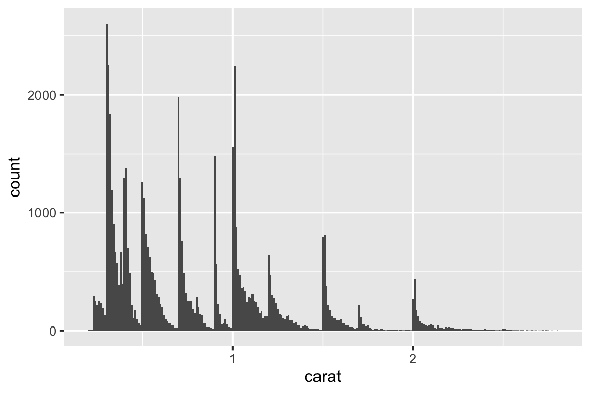
이 히스토그램은 몇 가지 흥미로운 질문을 시사합니다.
- 왜 정수 캐럿과 캐럿의 일반적인 분수(fractions)에서 더 많은 다이아몬드가 존재할까요?
- 왜 각 정점의 약간 왼쪽보다 각 정점의 약간 오른쪽에 더 많은 다이아몬드가 있을까요?
시각화는 군집(clusters)을 드러낼 수도 있으며 이는 데이터에 하위 그룹(subgroups)이 존재함을 시사합니다. 하위 그룹을 이해하려면 다음과 같이 질문하세요.
- 각 하위 그룹 내의 관측치는 어떻게 서로 비슷합니까?
- 별도의 군집에 있는 관측치는 서로 어떻게 다릅니까?
- 군집을 어떻게 설명하거나 묘사할 수 있습니까?
- 군집의 모양이 오해를 불러일으킬 수 있는 이유는 무엇입니까?
이러한 질문 중 일부는 데이터로 대답할 수 있지만 일부는 데이터에 대한 도메인 전문 지식(domain expertise)이 필요합니다. 많은 질문들이 한 변수의 값이 다른 변수의 행동을 설명할 수 있는지 확인하기 위해 변수들 사이의(between) 관계를 탐색하도록 유도할 것입니다. 이에 대해서는 곧 다루겠습니다.
2.2 비정상적인 값
이상치(Outliers)는 비정상적인 관측치입니다. 즉 패턴에 맞지 않는 것 같은 데이터 포인트입니다. 때로는 이상치가 데이터 입력 오류일 수도 있고, 때로는 이 데이터 수집 과정에서 우연히 관찰된 극한의(extremes) 값일 뿐일 수도 있으며, 다른 때로는 중요한 새로운 발견을 암시할 수도 있습니다.
데이터가 많을 때 이상치는 히스토그램에서 보기가 어려운 경우가 많습니다. 예를 들어 다이아몬드 데이터셋의 y 변수 분포를 가져옵니다. 이상치의 유일한 증거는 x축의 비정상적으로 넓은 한계(limits)입니다.
ggplot(diamonds, aes(x = y)) +
geom_histogram(binwidth = 0.5)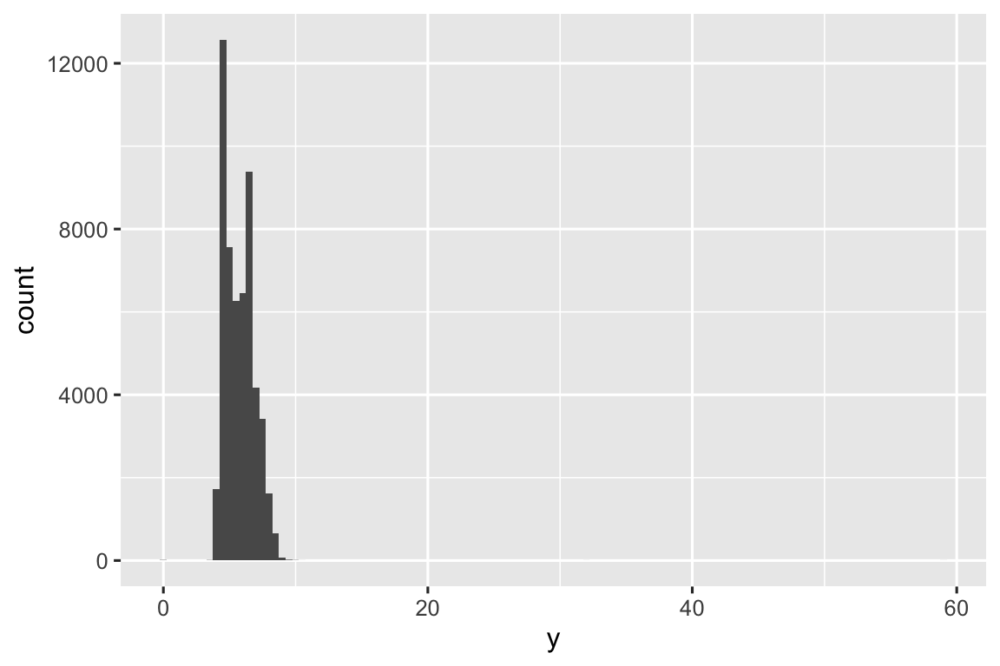
일반적인 구간에는 너무 많은 관측치가 있어서 드문 구간은 매우 짧아 보기가 매우 어렵습니다(물론 0을 뚫어지게 쳐다보면 무언가를 발견할 수도 있겠지만요). 비정상적인 값을 쉽게 보려면 coord_cartesian()을 사용하여 y축의 작은 값으로 확대(zoom)해야 합니다.
ggplot(diamonds, aes(x = y)) +
geom_histogram(binwidth = 0.5) +
coord_cartesian(ylim = c(0, 50))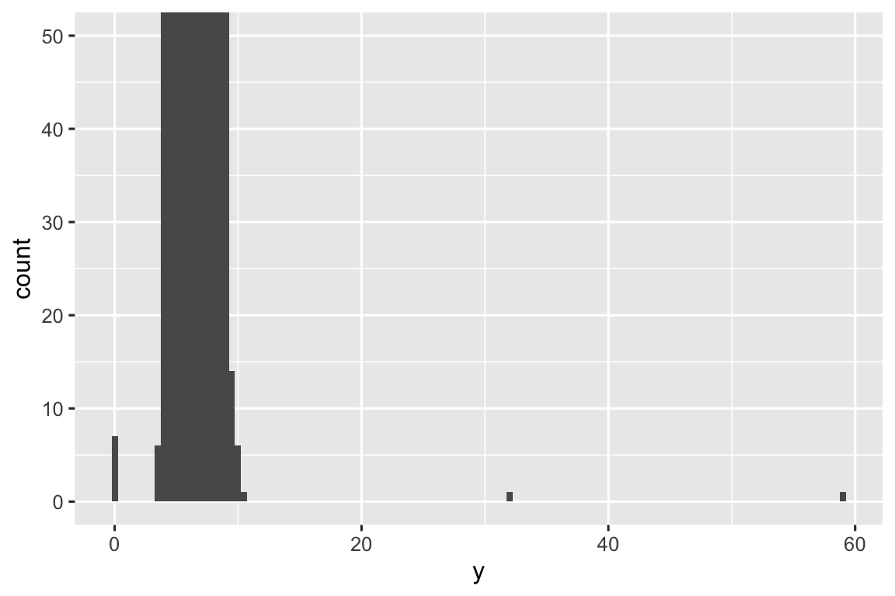
coord_cartesian()에는 x축을 확대해야 할 때를 위한 xlim() 인수도 있습니다. ggplot2에는 약간 다르게 작동하는 xlim() 및 ylim() 함수도 있습니다. 이들은 한계 밖의 데이터를 버립니다(throw away).
이를 통해 비정상적인 값이 세 가지(0, ~30, ~60) 있음을 알 수 있습니다. dplyr을 사용하여 그것들을 뽑아냅니다(pluck them out).
unusual <- diamonds |>
filter(y < 3 | y > 20) |>
select(price, x, y, z) |>
arrange(y)
unusual
#> # A tibble: 9 × 4
#> price x y z
#> <int> <dbl> <dbl> <dbl>
#> 1 5139 0 0 0
#> 2 6381 0 0 0
#> 3 12800 0 0 0
#> 4 15686 0 0 0
#> 5 18034 0 0 0
#> 6 2130 0 0 0
#> 7 2130 0 0 0
#> 8 2075 5.15 31.8 5.12
#> 9 12210 8.09 58.9 8.06y 변수는 이 다이아몬드의 세 가지 차원 중 하나를 mm 단위로 측정합니다. 다이아몬드는 폭이 0mm일 수 없다는 것을 알기 때문에 이 값들은 틀렸음이 틀림없습니다. EDA를 수행함으로써 0으로 코딩된 결측 데이터(missing data)를 발견했으며, 단순히 NA를 검색하는 것만으로는 절대 찾을 수 없었을 것입니다. 앞으로는 오해의 소지가 있는 계산을 방지하기 위해 이러한 값을 NA로 다시 코딩하도록 선택할 수 있습니다. 또한 32mm와 59mm의 측정치가 믿기 어렵다고(implausible) 의심할 수 있습니다. 그 다이아몬드는 길이가 1인치가 넘지만 수십만 달러가 들지 않습니다!
이상치를 포함하거나 제외하고 분석을 반복하는 것이 좋은 관행입니다. 결과에 미치는 영향이 최소화되고 왜 그 자리에 있는지 파악할 수 없다면 그것들을 생략하고 계속 진행하는 것이 합리적입니다. 그러나 결과에 상당한 영향을 미치는 경우 정당한 이유(justification) 없이 제외해서는 안 됩니다. 원인(데이터 입력 오류)을 파악하고 보고서(write-up)에서 이상치를 제거했음을 밝혀야 합니다.
2.3 연습 문제
diamonds데이터셋에서x,y,z변수 각각의 분포를 탐색하세요. 무엇을 알 수 있나요? 다이아몬드에 대해 생각해 보고 어떤 치수가 길이, 너비, 깊이인지 어떻게 결정할 수 있을지 생각해 보세요.price의 분포를 탐색하세요. 특이하거나 놀라운 점을 발견하셨나요? (힌트:binwidth에 대해 신중하게 생각하고 넓은 범위의 값을 시도해 보세요.)0.99 캐럿의 다이아몬드는 몇 개인가요? 1 캐럿은 몇 개인가요? 차이의 원인이 무엇이라고 생각하시나요?
히스토그램을 확대할 때
coord_cartesian()과xlim()또는ylim()을 비교하고 대조하세요.binwidth를 설정하지 않고 두면 어떻게 되나요? 막대의 절반만 보이도록 확대(zoom)하려고 시도하면 어떻게 되나요?
3 비정상적인 값
데이터셋에서 비정상적인 값을 발견했고 단순히 분석의 나머지 부분으로 넘어가고 싶다면 두 가지 옵션이 있습니다.
- 이상한 값이 포함된 전체 행을 삭제합니다(Drop the entire row). 하나의 잘못된 값이 해당 관측치에 대한 다른 모든 값도 유효하지 않음을 의미하지는 않기 때문에 이 옵션은 권장하지 않습니다. 게다가 저품질 데이터(low quality data)가 있는 경우, 모든 변수에 이 접근법을 적용하고 나면 남은 데이터가 전혀 없을 수도 있습니다!
diamonds2 <- diamonds |>
filter(between(y, 3, 20))- 대신 비정상적인 값을 결측값으로 바꾸는 것을 권장합니다. 쉬운 방법은
mutate()를 사용하여 변수를 수정된 복사본으로 대체하는 것입니다.if_else()함수를 사용하여 비정상적인 값을NA로 대체할 수 있습니다. 결측값을 어디에 플롯해야 하는지 명확하지 않기 때문에 ggplot2는 이를 플롯에 포함시키지 않지만 제거되었다고 경고합니다.
diamonds2 <- diamonds |>
mutate(y = if_else(y < 3 | y > 20, NA, y))ggplot(diamonds2, aes(x = x, y = y)) +
geom_point()
#> Warning: Removed 9 rows containing missing values or values outside the scale range
#> (`geom_point()`).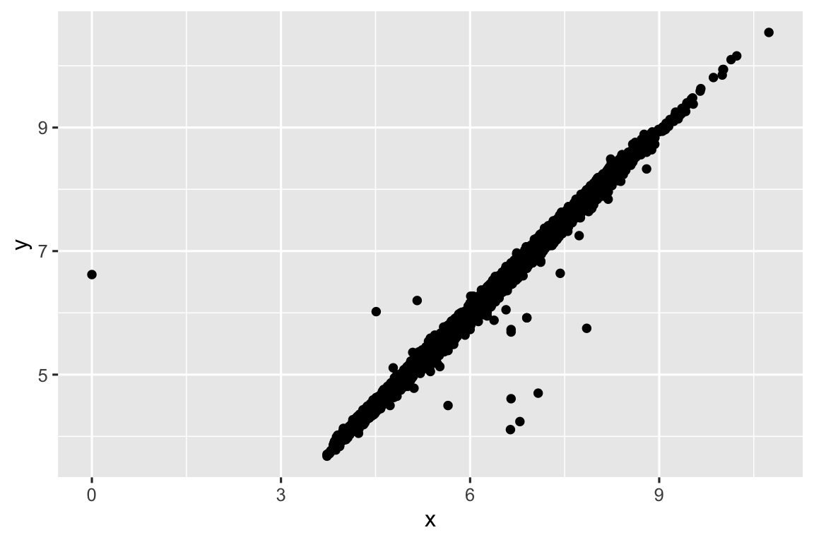
이 경고를 억제하려면 na.rm = TRUE를 설정합니다.
ggplot(diamonds2, aes(x = x, y = y)) +
geom_point(na.rm = TRUE)어떤 때는 결측값이 있는 관측치가 기록된 값(recorded values)이 있는 관측치와 어떻게 다른지 이해하고 싶을 수 있습니다. 예를 들어 nycflights13::flights1에서 dep_time 변수의 결측값은 항공편이 취소되었음을 나타냅니다.
따라서 취소된 시간과 취소되지 않은 시간의 예정 출발 시간(scheduled departure times)을 비교하고 싶을 수 있습니다. is.na()를 사용하여 dep_time이 누락되었는지 확인하는 새 변수를 만들어 이 작업을 수행할 수 있습니다.
nycflights13::flights |>
mutate(
cancelled = is.na(dep_time),
sched_hour = sched_dep_time %/% 100,
sched_min = sched_dep_time %% 100,
sched_dep_time = sched_hour + (sched_min / 60)
) |>
ggplot(aes(x = sched_dep_time)) +
geom_freqpoly(aes(color = cancelled), binwidth = 1/4)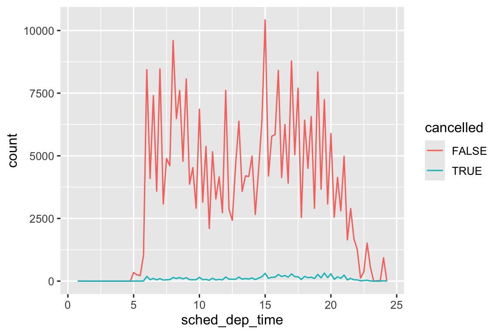
그러나 취소되지 않은 항공편이 취소된 항공편보다 훨씬 많기 때문에 이 플롯은 그다지 좋지 않습니다. 다음 섹션에서는 이 비교를 개선하기 위한 몇 가지 기술을 탐색할 것입니다.
3.1 연습 문제 (Exercises)
히스토그램에서 결측값은 어떻게 되나요? 막대 차트에서 결측값은 어떻게 되나요? 히스토그램과 막대 차트에서 결측값이 처리되는 방식에 차이가 있는 이유는 무엇인가요?
mean()과sum()에서na.rm = TRUE는 무슨 역할을 하나요?항공편이 취소되었는지 여부에 따라 색상이 지정된
scheduled_dep_time의 빈도 플롯을 다시 만드세요. 또한cancelled변수로 패싯(facet)을 만드세요. 패싯 함수의scales변수에 여러 가지 값을 실험하여 취소되지 않은 항공편이 취소된 항공편보다 많은 경우의 효과를 완화해(mitigate) 보세요.
4 공변동
변동(variation)이 변수 내부의(within) 행동을 묘사한다면 공변동(covariation)은 변수 사이의(between) 행동을 묘사합니다. 공변동은 두 개 이상의 변수 값이 관련된 방식으로 함께 변동하는 경향입니다. 공변동을 파악하는 좋은 방법은 두 개 이상의 변수 간 관계를 시각화하는 것입니다.
4.1 범주형 변수와 숫자형 변수
예를 들어 geom_freqpoly()를 사용하여 다이아몬드의 가격이 다이아몬드의 품질(cut으로 측정됨)에 따라 어떻게 달라지는지 탐색해 보겠습니다.
ggplot(diamonds, aes(x = price)) +
geom_freqpoly(aes(color = cut), binwidth = 500, linewidth = 0.75)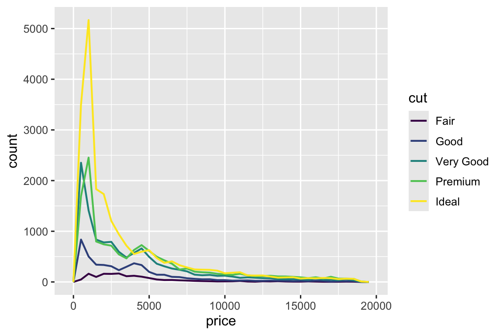
cut은 데이터에서 순서형 팩터 변수(ordered factor variable)로 정의되어 있기 때문에 ggplot2는 cut에 대해 순서가 있는 색상 척도(ordered color scale)를 사용합니다.
전체 개수에 의해 결정되는 높이가 cut 전체에 걸쳐 너무 많이 다르기 때문에 분포 모양의 차이를 보기 어렵게 만들므로 geom_freqpoly()의 기본 모양은 여기에서 그다지 유용하지 않습니다.
비교를 더 쉽게 하려면 y축에 표시되는 것을 바꿔야 합니다. 개수를 표시하는 대신 밀도(density)를 표시할 것입니다. 밀도는 각 빈도 다각형 아래의 면적이 1이 되도록 표준화된(standardized) 개수입니다.
ggplot(diamonds, aes(x = price, y = after_stat(density))) +
geom_freqpoly(aes(color = cut), binwidth = 500, linewidth = 0.75)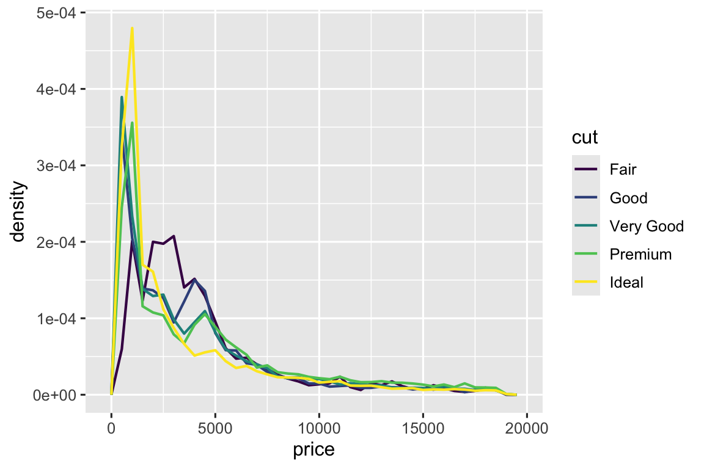
밀도를 y에 매핑하고 있지만 density는 diamonds 데이터셋의 변수가 아니기 때문에 먼저 이를 계산해야 한다는 점에 유의하세요. 이를 수행하기 위해 after_stat() 함수를 사용합니다.
이 플롯에는 다소 놀라운 점이 있습니다. 바로 fair 다이아몬드(최저 품질)의 평균 가격이 높아 보인다는 것입니다! 하지만 그것은 빈도 다각형이 해석하기 약간 어렵기 때문일 수 있습니다. 이 플롯에서는 많은 일이 일어나고 있습니다.
이 관계를 탐색하기 위해 시각적으로 더 단순한 플롯은 나란히 놓인(side-by-side) 상자 그림(boxplots)을 사용하는 것입니다.
ggplot(diamonds, aes(x = cut, y = price)) +
geom_boxplot()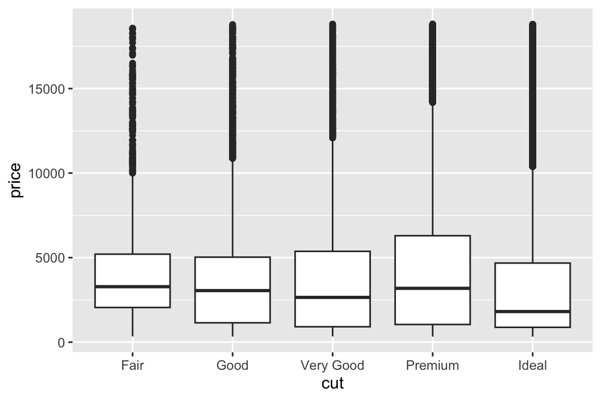
분포에 대한 정보는 훨씬 적게 보이지만 상자 그림이 훨씬 더 간결(compact)하여 더 쉽게 비교할 수 있습니다(그리고 하나의 플롯에 더 많이 들어맞게 할 수 있습니다). 이 플롯은 더 좋은 품질의 다이아몬드가 일반적으로 더 저렴하다는 직관에 반하는 (counter-intuitive) 발견을 뒷받침합니다! 연습 문제에서 그 이유를 알아내기 위한 과제(challenge)가 주어질 것입니다.
cut은 순서형 팩터(ordered factor)입니다. fair는 good보다 나쁘고, 이는 very good보다 나쁘며 이런 식으로 계속됩니다. 많은 범주형 변수에는 이러한 내재적(intrinsic) 순서가 없으므로 더 유용한(informative) 디스플레이를 만들기 위해 이들의 순서를 재정렬(reorder)하고 싶을 수 있습니다.이를 수행하는 한 가지 방법은 fct_reorder()를 사용하는 것입니다. 유용하기 때문에 여기서 간단한 미리보기(preview)를 제공하고자 합니다. 예를 들어 mpg 데이터셋의 class 변수를 가져옵니다. 고속도로 주행 거리가 class에 따라 어떻게 다른지 알고 싶을 수 있습니다.
ggplot(mpg, aes(x = class, y = hwy)) +
geom_boxplot()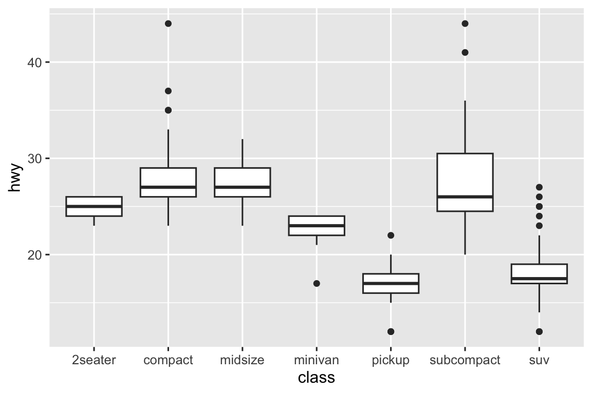
추세(trend)를 더 쉽게 보기 위해 hwy의 중앙값을 기반으로 class를 재정렬할 수 있습니다.
ggplot(mpg, aes(x = fct_reorder(class, hwy, median), y = hwy)) +
geom_boxplot()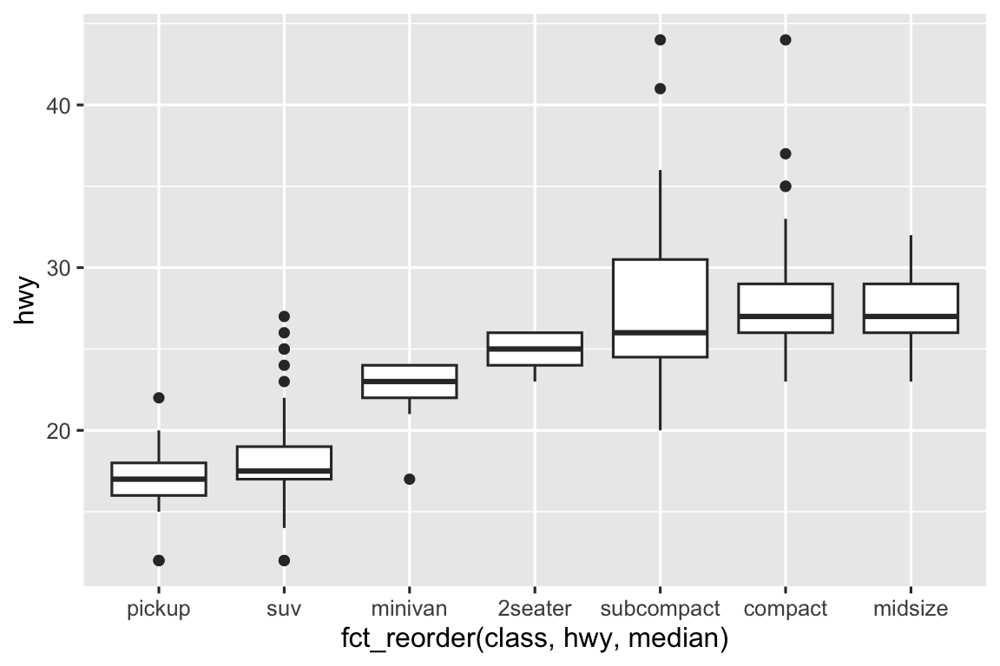
변수 이름이 긴 경우 geom_boxplot()을 90도 뒤집으면(flip) 더 잘 작동합니다. x와 y 심미성 매핑을 교환(exchanging)하여 이 작업을 수행할 수 있습니다.
ggplot(mpg, aes(x = hwy, y = fct_reorder(class, hwy, median))) +
geom_boxplot()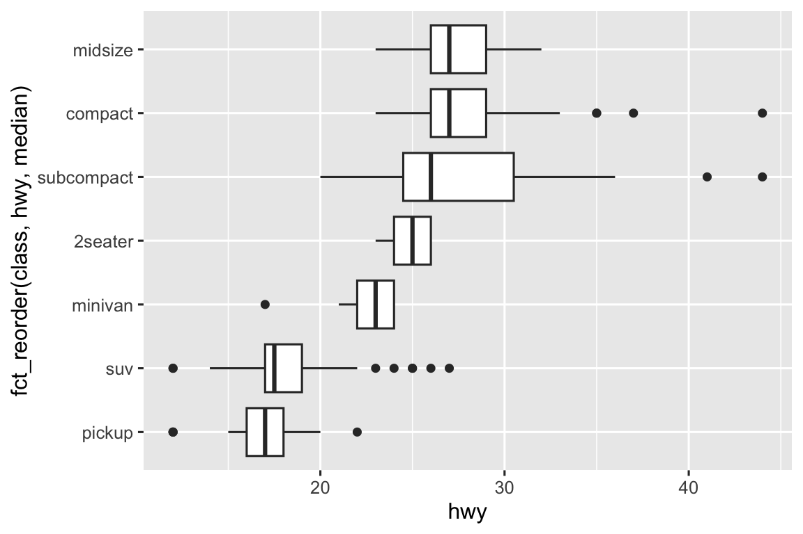
4.1.1 연습 문제
취소된 항공편과 취소되지 않은 항공편의 출발 시간 시각화를 개선하기 위해 배운 내용을 사용하세요.
EDA를 기반으로 다이아몬드 데이터셋에서 다이아몬드 가격을 예측하는 데 중요해 보이는 변수는 무엇입니까? 해당 변수는 cut과 어떤 상관관계가 있습니까? 이 두 관계의 조합으로 인해 왜 낮은 품질의 다이아몬드가 더 비싼 결과를 낳게 될까요?
x와y변수를 교환하는 대신 세로형 상자 그림에 새로운 레이어로coord_flip()을 추가하여 가로형 상자 그림을 만드세요. 변수를 교환하는 것과 어떻게 비교되나요?상자 그림의 한 가지 문제는 훨씬 더 작은 데이터셋이 일반적이던 시대(era)에 개발되었으며 엄청나게 많은 수의 “외부 값(outlying values)”을 표시하는 경향이 있다는 것입니다. 이 문제를 해결하기 위한 한 가지 접근법은 문자 값 플롯(letter value plot)입니다. lvplot 패키지를 설치하고
geom_lv()를 사용하여 price 대 cut의 분포를 표시해 보세요. 무엇을 알 수 있나요? 플롯을 어떻게 해석하나요?geom_violin()을 사용하여diamonds데이터셋의 범주형 변수 대 다이아몬드 가격의 시각화를 생성한 다음 패싯 처리된geom_histogram(), 색상이 지정된geom_freqpoly(), 색상이 지정된geom_density()를 생성하세요. 네 가지 플롯을 비교하고 대조하세요. 범주형 변수의 수준(levels)에 따라 숫자형 변수의 분포를 시각화하는 각 방법의 장단점은 무엇입니까?데이터셋이 작은 경우 연속형 변수와 범주형 변수 간의 관계를 더 쉽게 보기 위해 오버플로팅(overplotting)을 방지하는
geom_jitter()를 사용하는 것이 유용할 때가 있습니다. ggbeeswarm 패키지는geom_jitter()와 유사한 다양한 방법을 제공합니다. 목록을 작성하고 각각의 기능을 간략하게 설명하세요.
4.2 두 개의 범주형 변수
범주형 변수들 사이의 공변동을 시각화하려면 이러한 범주형 변수의 각 수준 조합(combination of levels)에 대한 관측치 수를 세어야 합니다. 이를 수행하는 한 가지 방법은 내장된 geom_count()에 의존하는 것입니다.
ggplot(diamonds, aes(x = cut, y = color)) +
geom_count()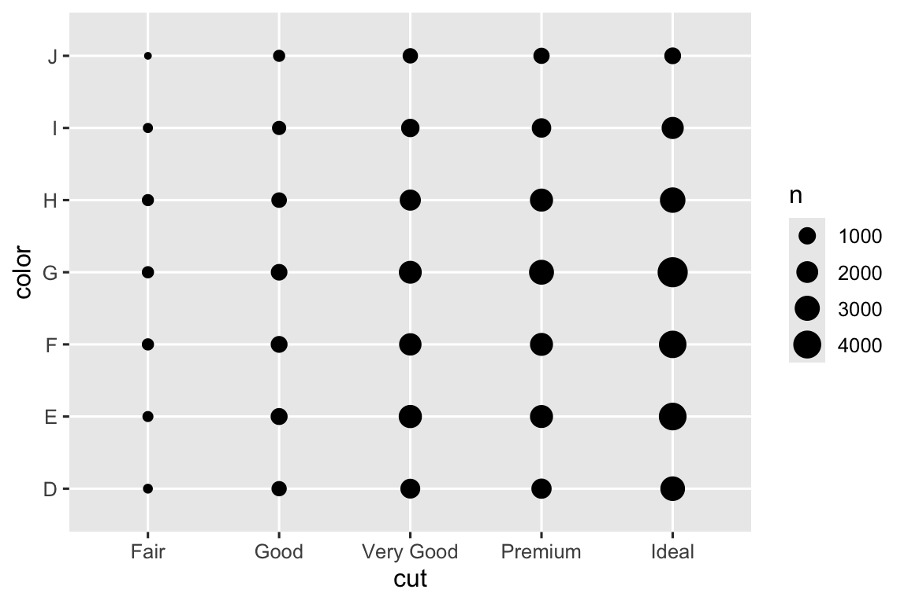
플롯의 각 원 크기는 각 값의 조합에서 얼마나 많은 관측치가 발생했는지를 나타냅니다. 공변동은 특정 x 값과 특정 y 값 사이의 강한 상관관계로 나타납니다.
이러한 변수 간의 관계를 탐색하는 또 다른 접근법은 dplyr을 사용하여 개수를 계산하는 것입니다.
diamonds |>
count(color, cut)
#> # A tibble: 35 × 3
#> color cut n
#> <ord> <ord> <int>
#> 1 D Fair 163
#> 2 D Good 662
#> 3 D Very Good 1513
#> 4 D Premium 1603
#> 5 D Ideal 2834
#> 6 E Fair 224
#> # ℹ 29 more rows그런 다음 geom_tile() 및 fill 심미성으로 시각화합니다.
diamonds |>
count(color, cut) |>
ggplot(aes(x = color, y = cut)) +
geom_tile(aes(fill = n))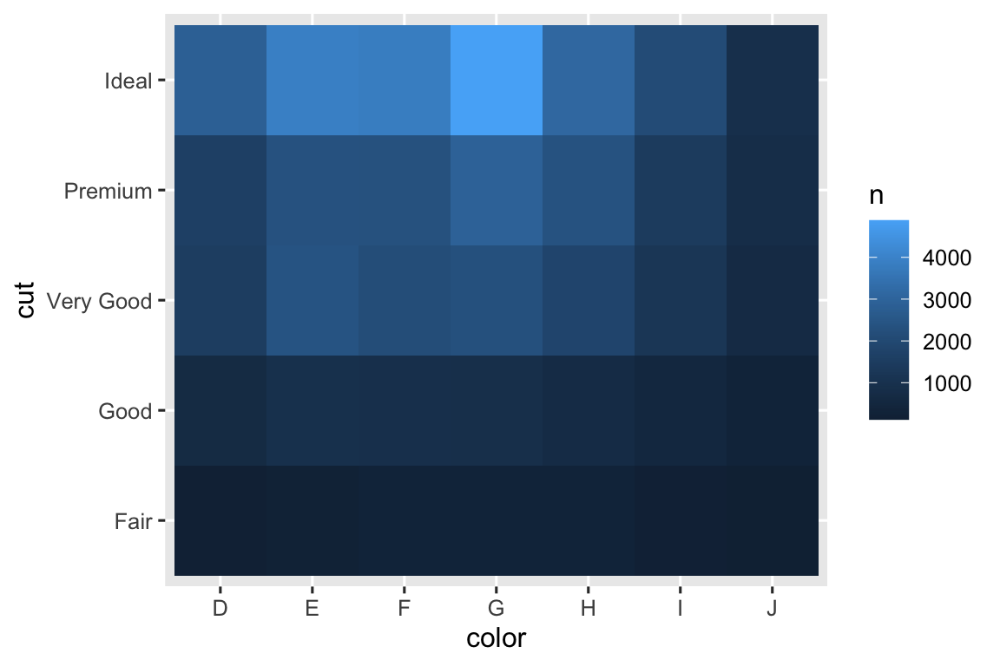
범주형 변수의 순서가 없는 경우(unordered), 흥미로운 패턴을 더 명확하게 드러내기 위해 행과 열을 동시에 재정렬하는 seriation 패키지를 사용하고 싶을 수 있습니다. 더 큰 플롯의 경우 대화형 플롯(interactive plots)을 생성하는 heatmaply 패키지를 사용해 볼 수 있습니다.
4.2.1 연습 문제
color 내의 cut 분포 또는 cut 내의 color 분포를 더 명확하게 표시하기 위해 위의 카운트 데이터셋의 스케일을 어떻게 조정(rescale)할 수 있을까요?
color를
x심미성에 매핑하고cut을fill심미성에 매핑한 분할 막대 차트를 사용하면 어떤 다른 데이터 통찰을 얻을 수 있나요? 각 세그먼트에 속하는 개수를 계산하세요.geom_tile()을 dplyr과 함께 사용하여 평균 항공편 출발 지연이 목적지 및 연중 월(month of year)에 따라 어떻게 달라지는지 탐색하세요. 이 플롯을 읽기 어렵게 만드는 이유는 무엇입니까? 어떻게 개선할 수 있을까요?
4.3 두 개의 숫자형 변수
두 숫자형 변수 사이의 공변동을 시각화하는 아주 좋은 방법을 이미 보았습니다. geom_point()로 산점도를 그리는 것입니다. 점의 패턴으로 공변동을 볼 수 있습니다. 예를 들어 다이아몬드의 캐럿 크기와 가격 사이의 양의 관계(positive relationship)를 볼 수 있습니다. 캐럿이 높은 다이아몬드가 더 높은 가격을 갖습니다. 이 관계는 지수적(exponential)입니다.
ggplot(smaller, aes(x = carat, y = price)) +
geom_point()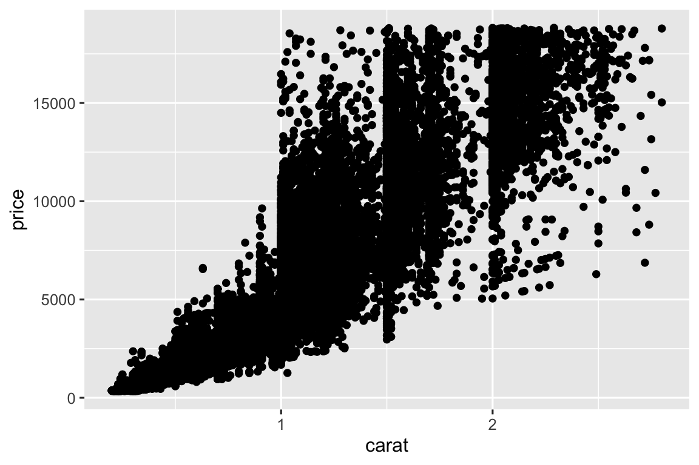
데이터셋의 크기가 커질수록 점들이 오버플로팅(overplot)되기 시작하고 짙은 검은색 영역에 쌓여 2차원 공간 전체에서 데이터 밀도의 차이를 판단하기 어렵게 만들고 추세를 파악하기 어렵게 하므로 산점도의 유용성이 떨어집니다. 이 문제를 해결하는 한 가지 방법을 이미 보았습니다. 투명도를 추가하기 위해 alpha 심미성을 사용하는 것입니다.
ggplot(smaller, aes(x = carat, y = price)) +
geom_point(alpha = 1 / 100)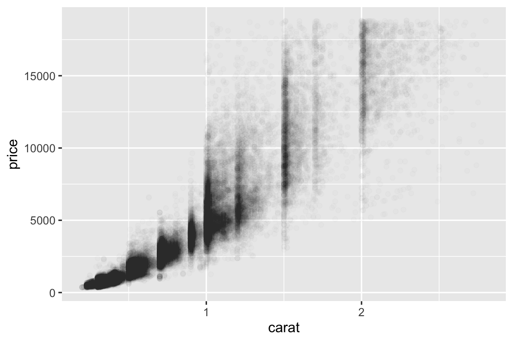
그러나 투명도를 사용하는 것은 매우 큰 데이터셋에서는 어려울 수 있습니다. 또 다른 해결책은 구간(bin)을 사용하는 것입니다. 이전에 geom_histogram() 및 geom_freqpoly()를 사용하여 1차원으로 구간을 나누었습니다. 이제 geom_bin2d() 및 geom_hex()를 사용하여 2차원으로 구간을 나누는 방법을 배울 것입니다.
geom_bin2d() 및 geom_hex()는 좌표 평면을 2차원 구간(2d bins)으로 나눈 다음 채우기 색상(fill color)을 사용하여 각 구간에 속하는 점의 수를 표시합니다. geom_bin2d()는 직사각형 구간을 생성합니다. geom_hex()는 육각형 구간(hexagonal bins)을 생성합니다. geom_hex()를 사용하려면 hexbin 패키지를 설치해야 합니다.
ggplot(smaller, aes(x = carat, y = price)) +
geom_bin2d()
#> `stat_bin2d()` using `bins = 30`. Pick better value `binwidth`.
# install.packages("hexbin")
ggplot(smaller, aes(x = carat, y = price)) +
geom_hex()
#> Warning: Computation failed in `stat_binhex()`.
#> Caused by error in `compute_group()` at ggplot2/R/ggproto.R:196:17:
#> ! The package "hexbin" is required for `stat_bin_hex()`.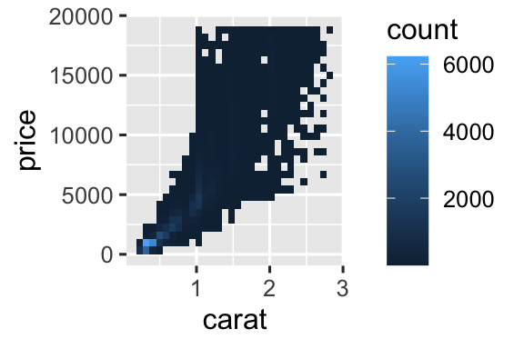
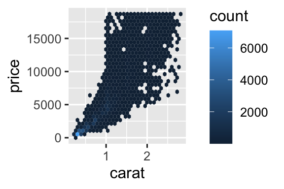
또 다른 옵션은 하나의 연속형 변수를 구간으로 나누어 범주형 변수처럼 작동하게 하는 것입니다. 그런 다음 여러분이 배운 범주형 변수와 연속형 변수의 조합을 시각화하는 기술 중 하나를 사용할 수 있습니다. 예를 들어 carat을 구간으로 나누고 각 그룹에 대해 상자 그림을 표시할 수 있습니다.
ggplot(smaller, aes(x = carat, y = price)) +
geom_boxplot(aes(group = cut_width(carat, 0.1)))
#> Warning: Orientation is not uniquely specified when both the x and y aesthetics are
#> continuous. Picking default orientation 'x'.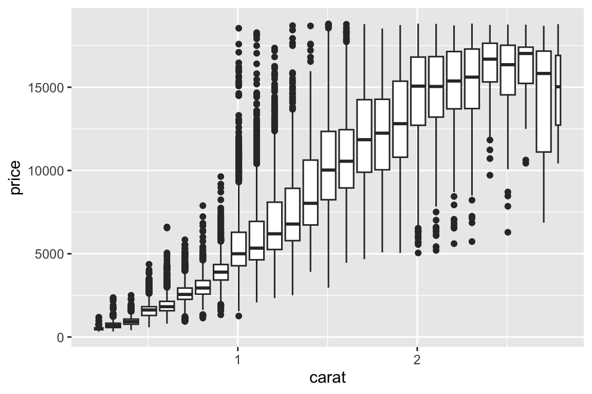
위에서 사용된 cut_width(x, width)는 x를 width 너비의 구간으로 나눕니다. 기본적으로 상자 그림은 관측치가 얼마나 많은지에 관계없이 (이상치의 수를 제외하고) 대략 동일하게 보이므로 각 상자 그림이 다른 수의 점을 요약한다는 것을 알기 어렵습니다.
이를 보여주는 한 가지 방법은 varwidth = TRUE를 사용하여 상자 그림의 너비를 점의 수에 비례하도록(proportional) 만드는 것입니다.
4.3.1 연습 문제
상자 그림으로 조건부 분포(conditional distribution)를 요약하는 대신 빈도 다각형(frequency polygon)을 사용할 수 있습니다.
cut_width()대cut_number()를 사용할 때 무엇을 고려해야 하나요? 그것이carat과price의 2차원 분포 시각화에 어떤 영향을 미치나요?price로 분할된carat의 분포를 시각화하세요.매우 큰 다이아몬드의 가격 분포는 작은 다이아몬드와 어떻게 비교되나요? 예상한 대로인가요, 아니면 놀라운가요?
배운 기술 중 두 가지를 결합하여 cut, carat, price의 결합된 분포를 시각화하세요.
2차원 플롯은 1차원 플롯에서 보이지 않는 이상치를 드러냅니다. 예를 들어 다음 플롯의 일부 점들은 비정상적인
x와y값의 조합을 가지고 있으며, 이 점들은 따로 검사할 때x와y값이 정상으로 보임에도 불구하고 이상치가 됩니다. 이 경우 구간 플롯(binned plot)보다 산점도가 더 나은 디스플레이인 이유는 무엇입니까?
diamonds |>
filter(x >= 4) |>
ggplot(aes(x = x, y = y)) +
geom_point() +
coord_cartesian(xlim = c(4, 11), ylim = c(4, 11))cut_width()를 사용하여 동일한 너비의 상자를 만드는 대신cut_number()를 사용하여 대략 동일한 수의 점을 포함하는 상자를 만들 수 있습니다. 이 접근법의 장점과 단점은 무엇입니까?
ggplot(smaller, aes(x = carat, y = price)) +
geom_boxplot(aes(group = cut_number(carat, 20)))5 패턴과 모델
두 변수 사이에 체계적인(systematic) 관계가 존재한다면 데이터에서 패턴으로 나타납니다. 패턴을 발견하면 스스로에게 물어보세요.
이 패턴이 우연(coincidence) (즉, 무작위 확률(random chance))에 의한 것일 수 있을까?
패턴이 암시하는(implied by) 관계를 어떻게 설명할 수 있을까?
패턴이 암시하는 관계는 얼마나 강할까?
관계에 영향을 미칠 수 있는 다른 변수들은 무엇이 있을까?
데이터의 개별 하위 그룹(subgroups)을 살펴보면 관계가 바뀌는가?
데이터의 패턴은 관계에 대한 단서(clues)를 제공합니다. 즉, 공변동을 드러냅니다. 변동(variation)을 불확실성을 생성하는 현상으로 생각한다면, 공변동(covariation)은 이를 줄이는 현상입니다. 두 변수가 공변동하는 경우 하나의 변수 값을 사용하여 다른 변수의 값을 더 잘 예측할 수 있습니다. 공변동이 인과 관계(causal relationship)(특수한 경우) 때문이라면 한 변수의 값을 사용하여 다른 변수의 값을 통제(control)할 수 있습니다.
모델은 데이터에서 패턴을 추출하는 도구입니다. 예를 들어 diamonds 데이터를 살펴보세요. cut과 carat, carat과 price가 긴밀하게(tightly) 관련되어 있기 때문에 cut과 price 사이의 관계를 이해하기 어렵습니다. price와 carat 사이의 매우 강한 관계를 제거하여 남아 있는 미묘한 차이(subtleties)를 탐색할 수 있도록 모델을 사용하는 것이 가능합니다. 다음 코드는 carat으로 price를 예측하는 모델을 적합(fits)시킨 다음 잔차(residuals)(예측값과 실제값의 차이)를 계산합니다. 잔차는 carat의 효과가 제거된 후 다이아몬드 가격에 대한 뷰를 제공합니다. price와 carat의 원시 값(raw values)을 사용하는 대신 먼저 로그(log) 변환을 수행하고 로그 변환된 값에 모델을 적합시킨다는 점에 유의하세요. 그런 다음 원시 가격 척도로 되돌리기 위해 잔차를 지수화(exponentiate)합니다.
library(tidymodels)
diamonds <- diamonds |>
mutate(
log_price = log(price),
log_carat = log(carat)
)
diamonds_fit <- linear_reg() |>
fit(log_price ~ log_carat, data = diamonds)
diamonds_aug <- augment(diamonds_fit, new_data = diamonds) |>
mutate(.resid = exp(.resid))
ggplot(diamonds_aug, aes(x = carat, y = .resid)) +
geom_point()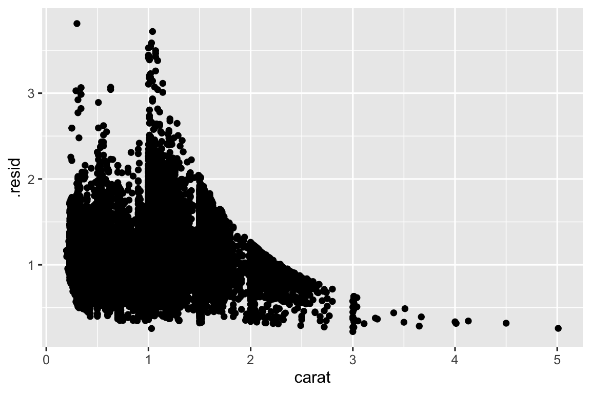
carat과 price 사이의 강한 관계를 제거하고 나면 cut과 price 사이의 관계에서 예상할 수 있는 것을 볼 수 있습니다. 크기에 비해 품질이 더 좋은 다이아몬드가 더 비쌉니다.
ggplot(diamonds_aug, aes(x = cut, y = .resid)) +
geom_boxplot()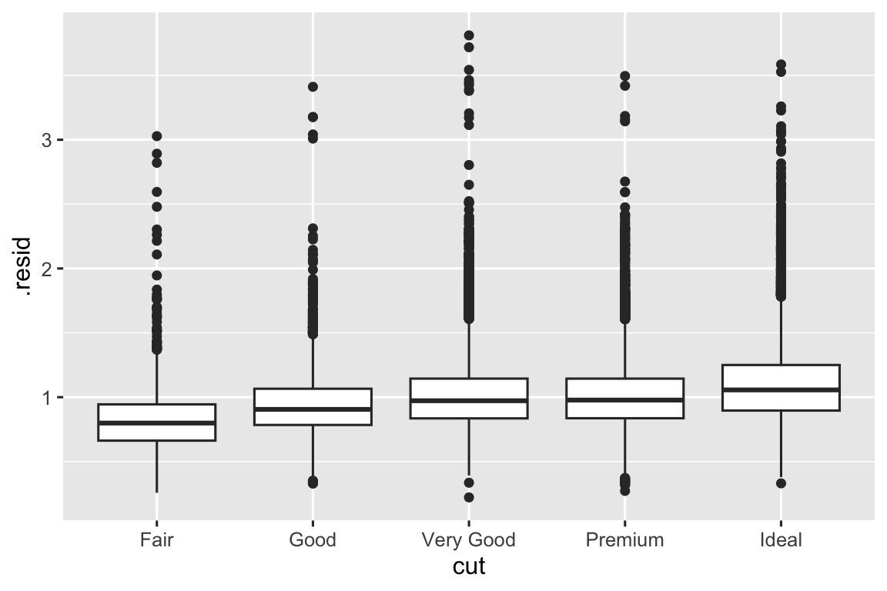
데이터 랭글링(data wrangling) 및 프로그래밍 도구를 익히고 나면 모델이 무엇이고 어떻게 작동하는지 이해하는 것이 쉽기 때문에 이 책에서는 모델링을 논의하지 않습니다.
함수(또는 데이터셋)의 출처를 명시해야 할 때는
package::function()또는package::dataset이라는 특수한 형태를 사용한다는 것을 기억하세요.↩︎